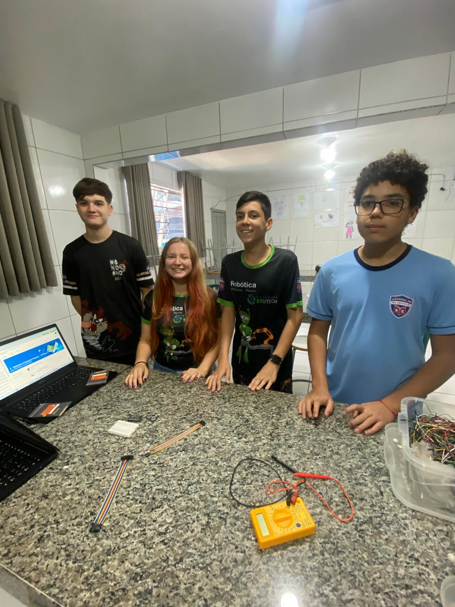
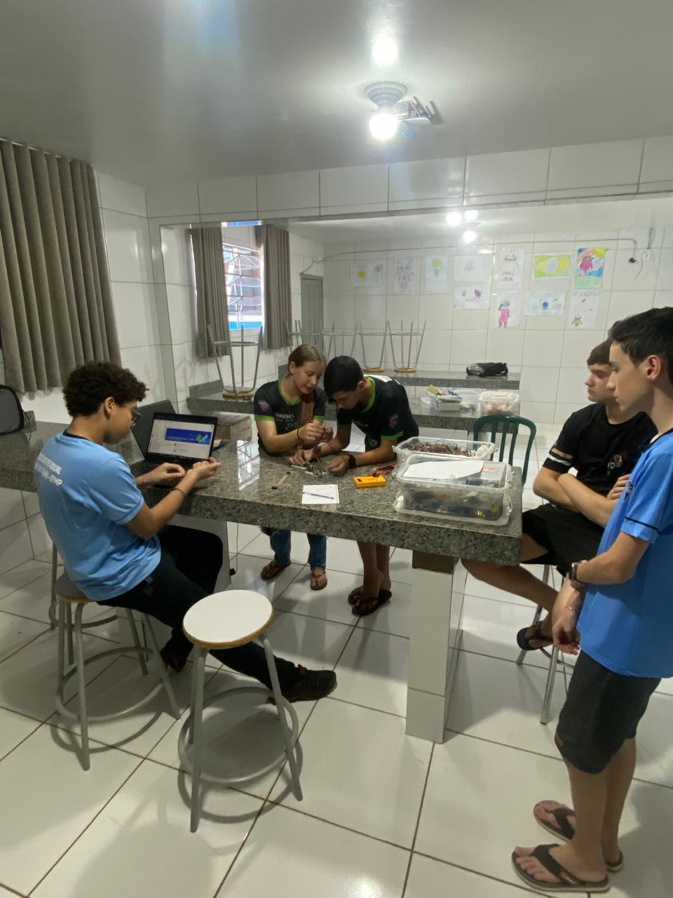
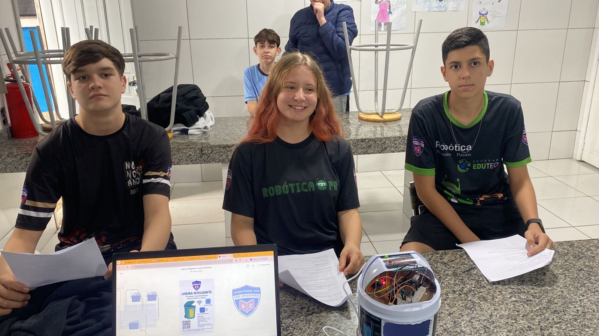

Construção do Projeto
Durante a construção do nosso projeto de Monitoramento de Lixo nos Distritos, passamos por diversas etapas de montagem, testes de sensores e programação. Abaixo estão alguns registros desse processo:
Montagem dos Componentes:
  Testes de Monitoramento de Gás:
Utilizamos sensores de gás integrados com o ESP32 para realizar testes de detecção. Criamos uma interface para acompanhar os níveis de gás em tempo real.
Integração com a Plataforma ThingSpeak:
Os dados captados pelos sensores foram enviados para a plataforma ThingSpeak, permitindo a visualização de gráficos atualizados em tempo real.
Resultados Finais:
A equipe conseguiu realizar uma integração eficiente entre hardware (sensores e ESP32), software (programação em Arduino e Web) e a apresentação dos dados online, demonstrando o potencial do projeto para monitoramento ambiental.